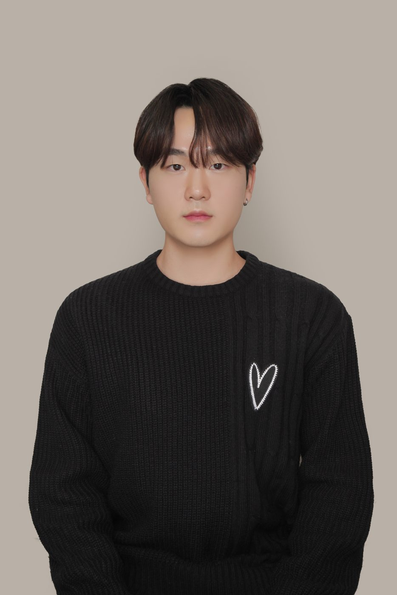

2023
Martin Loeser
Professor, ZHAW School of Engineering, Switzerland
Research Information Technology, Electrical Engineering
2023
Professor, ZHAW School of Engineering, Switzerland
Research Information Technology, Electrical Engineering
2026
Netmarble AI Engineer
Dissertation CodeFlow: A Cognitive-Aware Proactive AI Programming Assistant for Enhancing Developers’ Productivity and Experiences
2025
Dissertation Enhancing the reliability of LLM-as-a-Judge by generating rubrics with types tailored to evaluation contexts
2025
Ph.D. Student, HAI Lab
Dissertation LLM-based Virtual Counselor: A Comparison of Socratic and Didactic Counseling Styles for Academic Stress Management
2025
Ph.D. Student, National University of Singapore
Dissertation Designing empathetic self-disclosure in LLM-based chatbots to enhance students' self-reflection, engagement, and assessment accuracy
2025
Dissertation Enhancing students’ career decision-making and motivation with a self-determination theory-based career counseling chatbot

2024
Dissertation Improving counseling effectiveness with virtual counselors through nonverbal compassion involving eye contact, facial mimicry, and head-nodding
2024
Dissertation Active learning with chatbot: The impact of self-regulated learning on students’ engagement in argumentative writing
2023
Dissertation Utilization of EEG-SSVEP Neurological Biomarkers and Machine Learning for Early Detection of Mild Cognitive Impairment
해당 연도의 졸업생이 없습니다.
안녕하세요, HAI Lab 안내 도우미입니다.
궁금한 것을 문의해 보세요!